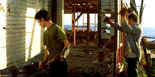

| Life as a House (SE)/ B-, B |
| New Line/2001/124/ANA 2.0 |
There's a strong temptation to dub Life as
a House "from this old house to this new house." But it is
more than that: it's the emotional journey of George Munroe as he decides
to mend life's broken fences. The main focus is the ramshackle house where
the flicker of George's architectural dream has slowly decayed with his
personal life. The house is the stage for George to rekindle the
relationship with his son, his former wife and make his own piece with
life.
Certainly the film is overly sentimental, but it's
reasonably novel approach provides some bracing. There are lots of scenes
that take the easy path to emotional heart-tugging, yet they are often
effective. Much of the time it does go hammer and nail on sentiment.
There's a fine line between artificially amplifying sentiments and letting
them play to its natural inherent power. Life as a House , in the
end, leans toward amplification. It's still a good movie, but the
raw material is there for a very good movie.
 |
|
Sledgehammer approach. ©New
Line
|
Director Irwin Winkler maintains a
surprisingly good pace through most of the film. The movement through
George's life is accelerated effectively to his moment of realized crisis.
Some of the humorous elements in Mark Andrus' script work, but when it
leans toward farce it's not a good match for the core drama of Life as
a House. Perhaps a sense of forced affability lurks on the periphery.
I might not go so far as to call Life as a House predictable, yet
every aspect seems very planned .There appears to be a lack of spontaneity
and surprise in the script. Everything seems a bit easy, even pulling out
the old twisted nails of rusted relationships.
Kevin Kline is a fine George. It's a nice match.
It's good to see him again in a straight dramatic role and not being too
flip. Kline reaches emotional depths that he probably has never reached
before on the screen. You get a sense that he is looking deep inside
himself. Kevin Kline is an outstanding narrator. There's a lovely
timbre to his voice and it adds a very personal; feeling to Life as a
House. You've gotta give George this: he is resourceful. Hayden
Christensen plays estranged son Sam with less than convincing results, but
perhaps his scripted role is beyond an actor's control. Kristen
Scott-Thomas is typically accomplished as George's former wife. Jenna
Malone and Mary Steenburgen are neighbors around to add a little extra
flavor to the house mix.
The building blocks of production are all first
rate. Cinematography by Vilmos Zsigmond captures the mechanics and setting
with evident pleasure. The Mark Isham score is very sentimental echoing
the tone of the film. It is pretty.
Life as a House is a well-constructed DVD.
It's a very bright transfer with good black levels. Some of the interior
lighting has a nice glow and good shadow detail captures the subtleties.
Color is excellent with fine range. Overall, this is a reasonably sharp
transfer, but there's a lingering feeling that maybe a tad more resolution
could have been extracted from the original elements. A bit of edginess is
evident in high peak transitions. The DTS surround is nicely delivered.
The music has a good solid beat with excellent spatial sense.
Special edition extras include commentary from
director Irwin Winkler, writer Mark Andrus and producer Rob Cowen. Two
documentaries explore the making of Life as a House and deleted scenes
with optional commentary complete the excellent package. |
|
|
|

Selections from the Feature
Archive include articles on Akira Kurosawa, Blonde Bimbos, Frank Darabont, Steven Culp, John Herzfeld or Vietnam: The Hollywood Pariah, and many
more....
Robert A. Harris
Tilting at Hollywood
He's part of the dynamic duo that restored Lawrence of Arabia, Spartacus,
My Fair Lady and Vertigo. Harris rides a white horse into the for the
cause of preserving our film legacy. Click on the image to read more.

The Movie Poster
Archive include extensive poster images from the films of stars like Susan
Hayward, Kirk Douglas, Katharine Hepburn and many more. Our featured
star is Spencer Tracy.

Three Kings/A-,A
Three Kings speeds ahead like a formula one race car on the fast track to
reckless fascination.
 
Manufacturer of computer-video interfaces, switchers, distribution
amplifiers, computer-video scan converters, and high resolution cable.
Found in many high end home theater systems.

Comprehensive DVD review database. Easy to use interface with
specific region searches.
List
Your DVD
Reader DVD Reviews and base DVD information. You can also
submit a list of your favorite DVDs.
|